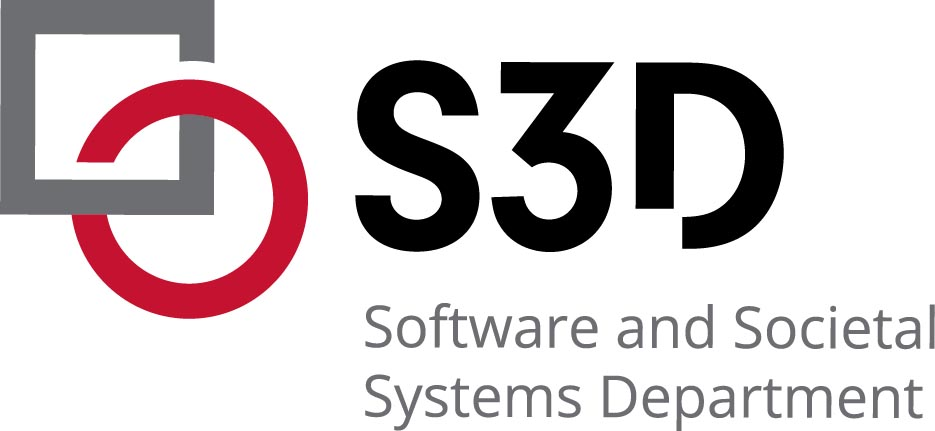

Carnegie Mellon University
Teaching Assistant for 17-214:
Principles of Software Construction: Objects, Design, and Concurrency
Pittsburgh, PA • Jan. 2022 - May 2022 (Expected)
- Led weekly recitations and office hours supporting 150+ students in software design and development in Java

Carnegie Mellon University
Software Engineer Intern
Pittsburgh, PA • Sep. 2022 - Jan. 2023
- Collaborated with Prof. Touretzky to develop an interactive knowledge graph web application that visualizes the relationships among USA regions using JavaScript, integrating data from RDF triplestore database
- Incorporated Cytoscape.js to facilitate real-time selection, panning, zooming, and dragging of graph elements and Cola.js to automatically balance the the nodes and edges for visually appealing network layout
- Developed an algorithm to enable geographic location identification through click recognition on map images and navigation tool for easy traversal of parent, children, and sibling nodes with a history feature/li>

PLUS - Personalized Learning Squared
Software Engineer Intern
Remote • May. 2022 - Sep. 2022
- Transformed design team's Figma prototypes into 10+ responsive web pages in Agile environment for startup rebranding using HTML, CSS, JavaScript, Bootstrap, and jQuery, resulting in 20%+ web traffic